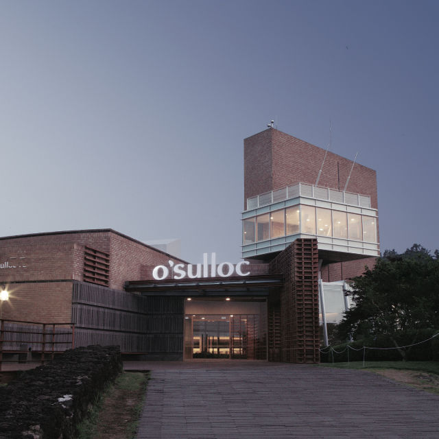
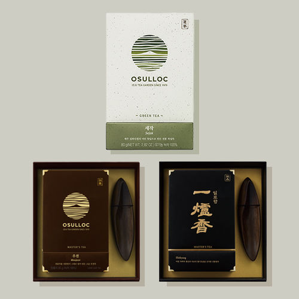

제주 오설록의 유기농 차밭은 연간
11.176톤의 이산화탄소를 흡수합니다.
이는 과수작물 대비 3배 이상의 탄소 축적
효과가 있습니다. 차 나무는
인류에게 건강한 차를 제공하며
동시에 지구의 건강한 환경에도
기여하고 있습니다.
TEA FROM JEJU
대한민국이 가진 천혜의 자연 유산 제주,
화산섬 제주가 가진 경이로운 생명력으로
오설록의 차는 탄생합니다.
한라산이 빚은 안개
연평균 해무 발생일수 25일

해발 1,950mm, 화산섬에 우뚝 솟은 한라산은 중산간에
급격한 온도차를 만들어 독특한 구름대와 안개를
형성합니다. 사방의
바다로 생성된 해무 발생일수도
연평균 25일에 달해, 자연이 빚은
차광재인 안개가
최적의 그늘을 선사합니다.
생명을 품은 화산섬의 흙
최대 공극률 75%
제주의 흙은 전 세계적으로도 손꼽히는 공극률로
물과 공기의 흐름을 원활하게 하고 일반 토양보다
10배나 높은 유기물을 함유하고 있습니다. 다공성
제주 현무암의 미세한 틈은 차나무를 건강하게
유지하여 제주차만의 차이를 만들어냅니다.
청정 화산 암반수
1,800mm 빗물의 천연필터
제주의 화산 암반수는 맑은 물을 넘어 '좋은 물'의
대명사 입니다. 천연 필터 역할을 하는 화산 토양은
제주의 암반수를 더욱 꺠끗하게 만들어 차 나무에
신선하게 공급됩니다.
제주의 거친 바람
연평균 초속 4~7m

거친 제주의 바람이지만 실은 차 재배에는 더없이
소중한 제주의 바람입니다. 남쪽의 먼 바다에서
연평균 초속 4~7m의 거센 바람이 불어와 뿌리의
수분 흡수를 증가시켜 차의 향기를 짙게 만들고,
찻잎의 불순물을 씻어내는 에어워셔의 효과로 제주
차만의 특별함을 더합니다.
아열대 기후의 화산섬
연평균 기온 16℃

제주 차밭은 화산섬이 만든 완만한 지형의 고저로
인해 식물 에너지의 근원인 태양을 한껏
끌어안습니다. 사계절 내내 쏟아지는 따뜻한 빛은
연 평균 기온을 14℃로 유지해 차가 건강하게
자랄 수 있는 온도를 제공합니다.
오설록의 제주 차밭
약 100만 평에 달하는 3개의 오설록 유기농 차밭은 화산섬의
지역적 기후 환경에 따라 각각의 색과 향, 그리고 맛이 특별한
차를 생산하고 있습니다.

-
색이 좋은 서광 차밭
산방산 근처의 서광 차밭은 대기가 한라산을 지나며 많은 구름과 안개를
주요 생산 제품
형성하고, 이는 자연 차광 효과를 내 찻잎의 색을 좋게 만듭니다.
온화한 기후와 자연 차광 효과는 고급 품질의 차를 만들 때 더없이 좋은
생육 조건이 됩니다.

제주특별자치도 서귀포시 안덕면 신화역사로 36
-
향이 좋은 돌송이 차밭
돌송이 차밭 지역은 예로부터 화산재가 굳어서 돌멩이같이 잘게 부서진
주요 생산 제품
화산송이가 많아 '돌송이'라고 불리어 왔습니다. 이곳은 산과 바다를
동시에 접하고 있어 매년 4월 한라산의 잔살을 품은 산바람과 바다의
수분을 머금은 바닷바람이 밤낮으로 불어와 돌송이 차밭에서 채엽한
차는 향이 매우 좋습니다.
제주특별자치도 서귀포시 중산간서로356번길 152-41
-
맛이 좋은 한남 차밭
과거 '해들이밭'이라 하여 마을에서 가장 먼저 해가 드는 곳이라 불렸던
주요 생산 제품
한남 차밭은 온화한 기후에서 성장해 차나무가 어리고 아미노산 함량이
높아 뛰어난 맛을 선사합니다. 제주특별자치도 서귀포시 남원읍 서성로652번길 166
오설록의 차가 특별한 이유
1979년, 돌과 바람이 전부였던 제주의 땅에서 시작해 최고의 차를 생산하기까지,
오설록의 차가 특별한 이유를 만나보세요.
-
제주 오설록의 유기농 차밭은 연간
11.176톤의 이산화탄소를 흡수합니다.
이는 과수작물 대비 3배 이상의 탄소
축적 효과가 있습니다. 차 나무는
인류에게 건강한 차를 제공하며 동시에
지구의 건강한 환경에도 기여하고
있습니다.제주 오설록의 유기농 차밭은 연간
11.176톤의 이산화탄소를 흡수합니다.
이는 과수작물 대비 3배 이상의 탄소
축적 효과가 있습니다. 차 나무는
인류에게 건강한 차를 제공하며 동시에
지구의 건강한 환경에도 기여하고
있습니다.제주 오설록의 유기농 차밭은 연간
11.176톤의 이산화탄소를 흡수합니다.
이는 과수작물 대비 3배 이상의 탄소
축적 효과가 있습니다. 차 나무는
인류에게 건강한 차를 제공하며 동시에
지구의 건강한 환경에도 기여하고
있습니다.Since 1979
차밭을 개간한 집념을 근간으로 차를 재배하고, 가공 발효하여 세계적으로 권위있는 명차 대회에서
꾸준히 수상을 이어가며 증명된 오설록의 차는 이제 전 세계의 사람들과 만나고 있습니다.1979
우리의 전통 차문화 정립을 위한
차 사업의 시작 제주 돌송이차밭 부지 돌밭 개간 착공
1980
설록차 브랜드 발매
첫번째 녹차 만수,천수,백수 출시1983
국내 최초 차 전문 매거진 태평양
<설록차> 창간
1984
서광 차밭 조성
1993
고급 입녹차를 우려낸 한국 최초
캔녹차 출시
1995
과학적 기계관리가 용이한 한남차밭 조성

1999
설록명차 일로향 출시
- 
2001
제주 오설록 티뮤지엄 개관

2002
차 업계 최초 전공장 HACCP 인증

2005
도심속 작은 제주, 티하우스 1호
서울 명동점 오픈2009
일로향, 북아메리카 티 챔피언십
덖음차부문 1위
세작, 일본 시즈오카 세계녹차콘테스트 금상
2010
유기농 인증인 USDA-NOP(미농무성 국가 유기인증) 획득, 유기농 인증인 IFORM (국제유기농협회 인증)획득, 기타 국/내외 유기농 인증마크 획득

2013
제주 오설록 티스톤 오픈
- 
2015
북아메리카 티 챔피언십
덖음차부문 1,2,3위 석권 2,500여개의 차 중에서 세작이 1위에 이어 우전과 일로향이 2,3위 모두 석권2016
세계 녹차 협회
WORLD TEA CONTAST 금상 [삼다연 삼 병차]
2018
제주 프리미엄 티의 품격을 선보이는 티하우스
'오설록 1979'2020
시계 녹차 협회 WORLD TEA CONTAST 금상
[일로향]2020
독일 IF디자인어워드 패키지 부문 수상 (순수차)
사람, 차를 만나다
억척스런 제주 사람의 손조차 한번도 닿지 않은 채 버려진 세곳의 땅을
제주의 자연을 이해하고 극복하며 한국의 차 문화를 잇기 위해 개간된 제주의 땅은
45년이 지난 지금 세계적인 차 산지로 손꼽히는 최고의 차 재배지로 거듭났습니다.손으로 찻잎을 채엽하는 모습
돌송이 차밭 계획 부지에서 고 장원 서성환 회장과 일행

서광 차밭 차묘목 식재 작업

차나무를 정성스럽게 살펴보는 고 장원 서성환 회장
다다일상,
차와 함께하는 삶차를 마시는 것은 일상의 쉼을 가지며, 나를 이끌어내고 세상을 따듯하게 바라보는 것에 관한 일입니다.
당신이 언제 어디에 있든 차와 함께 삶의 아름다운 여백을 만들어 나가길 바랍니다.-


차 한잔은 차분하게 하루를 정리하고 내일로
한 걸음 더 나아가게 만드는 기분이 들어요.
하루를 마무리하는 온점 같은 시간이라고 할까. 가구브랜드 대표 양윤선


-
운동을 매일 하는 것도 중요하지만 가장 신경
쓰는 부분은 수분 보충이에요. 운동 전에 물을
마시고 운동을 마치면 따뜻한 차를 마셔요. 러닝 트레이너 임소영 
후각이 예민하다 보니 차를 마실 떄도 향을 가장
신경 써요. 좋은 향을 내는 차가 심신에 안정을
줘서 더 즐기게 됐어요. 채식 요리 연구가 신주하
-
작업에 집중하기 시작하면 쉴 틈이 없는 제게,
차 한잔의 여유는 정말 소중하거든요. 테이핑 아티스트 박건우 -
차가운 공기 떄문인지 진한 자연의 냄새와
차 향이 함께 느껴지는데 집에서 마실
떄와는 또 다르더라고요. 오지 캠퍼 강서구
오설록의 더 많은 이야기를 만나보세요.